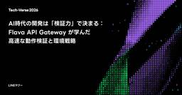

LINEヤフー Tech Blog (LY Corporation Tech Blog
https://techblog.lycorp.co.jp
LINEヤフー株式会社のサービスを支える、技術・開発文化を発信しています。
フィード

生成AIの利活用事例に関するLT会を開催しました！ Hacking Fest 2026 Spring 開催レポート
LINEヤフー Tech Blog (LY Corporation Tech Blog
2026年5月某日、生成AI利活用を推進する有志による「Hacking Fest 2026 Spring」が開催されました。Hacking Festとは？Hacking Festは、ゴールデンウィーク...
1日前

理論をどう実運用に乗せるのか。メディア領域のレコメンド最適化で問われる、実装可能性と事業価値への翻訳
LINEヤフー Tech Blog (LY Corporation Tech Blog
レコメンドや最適化の仕事は、モデルの精度を上げることだと思われがちです。しかし、実サービスではそれだけで価値になるとは限りません。ユーザー体験を良くしたい。セッション数を伸ばしたい。広告収益も維持した...
1日前

sim-use：エージェントに目と手を持たせる開発ツール 1
1
LINEヤフー Tech Blog (LY Corporation Tech Blog
こんにちは。LINEアプリ開発SBU AIディベロッパーエクスペリエンスチームの onevcat（王 巍）です。最近は、AI エージェントを開発・検証のループに組み込むためのツールづくりに取り組んでい...
2日前

秒間数万リクエストを処理する大規模HDFSにObserver NameNodeを導入した話
1
LINEヤフー Tech Blog (LY Corporation Tech Blog
はじめにLINEヤフーで大規模データ処理基盤の開発を担当している浅沼と楊です。この記事では、秒間数万リクエストを処理する社内の HDFS（Hadoop Distributed File System）...
4日前

プロンプトからワークフローへ：AIでフロントエンド開発の生産性を向上させる 2
LINEヤフー Tech Blog (LY Corporation Tech Blog
LINEヤフーの技術カンファレンス「Tech-Verse 2026」の公式記事です。生成AIで作成された画像もはや最大のボトルネックはコーディング速度ではありません。問題は入力の断片化と、それらをつな...
7日前

Embedding 安定化で検索リランキングのCold start problemを解決：LINEバイトでの適用事例紹介
15
LINEヤフー Tech Blog (LY Corporation Tech Blog
LINEヤフーの技術カンファレンス「Tech-Verse 2026」の公式記事です。こんにちは。LINEヤフーで機械学習プラットフォームを開発している木原健太と袁逸凡です。今回は、LINEバイトの検索...
7日前

AIエージェントに議論させよ：マルチエージェント連携による開発プロセスの再設計
LINEヤフー Tech Blog (LY Corporation Tech Blog
LINEヤフーの技術カンファレンス「Tech-Verse 2026」の公式記事です。AIでのコーディングで難しいのは、もはやコードを出すこと自体ではありません。課題はその周辺にあります。意図を正確な仕...
8日前

AI時代の開発は「検証力」で決まる：Flava API Gateway が学んだ高速な動作検証と環境戦略 1
LINEヤフー Tech Blog (LY Corporation Tech Blog
LINEヤフーの技術カンファレンス「Tech-Verse 2026」の公式記事です。エージェントがコードを書く時代にコーディングエージェントを使い始めると、最初に気づくのはその速さです。その試行錯誤の...
8日前

Semantic Context OS のアーキテクチャ：エージェントシステムにおける単なるトークン詰め込みを超えて
LINEヤフー Tech Blog (LY Corporation Tech Blog
LINEヤフーの技術カンファレンス「Tech-Verse 2026」の公式記事です。大規模言語モデル（LLM）が入力トークンの物理的しきい値を百万規模へと拡張するにつれ、ソフトウェア工学の現場は「シリ...
9日前
Flava DBaaS Deep Dive：アーキテクチャからマイグレーション、そして未来まで
LINEヤフー Tech Blog (LY Corporation Tech Blog
LINEヤフーの技術カンファレンス「Tech-Verse 2026」の公式記事です。はじめにこんにちは。LINEヤフー株式会社のDBaaS DevOpsチームで働いている朴政武（パク・ジョンム）です。...
9日前
プロンプトは人手チューニングからAIチューニングへ：遺伝的アルゴリズムで回す自動最適化と高速化
LINEヤフー Tech Blog (LY Corporation Tech Blog
LINEヤフーの技術カンファレンス「Tech-Verse 2026」の公式記事です。こんにちは。LINEヤフー株式会社の中野です。Yahoo!検索のAI回答サービスで大規模言語モデル（LLM）の最適化...
10日前
合計容量1EB超、異なる歴史を持つHDFSをどうつなぐか：LINEヤフーのデータ基盤間連携で直面した課題と設計判断
LINEヤフー Tech Blog (LY Corporation Tech Blog
LINEヤフーの技術カンファレンス「Tech-Verse 2026」の公式記事です。はじめにこんにちは。LINEヤフーで大規模データ基盤の運用を担当している平山、沼田、小笠原、小川です。LINEヤフー...
10日前
Infrastructure as Code（IaC）で自動化からAIまで：OpenTofuとChatOps導入記
LINEヤフー Tech Blog (LY Corporation Tech Blog
LY Corporationの技術カンファレンス Tech-Verse 2026 の公式記事です。はじめにこんにちは。社内クラウドサービス Verda および社内モニタリングツール IMON に In...
11日前
分析エージェントのチカラで分析を「ひとつなぎ」に！専門組織が挑む、生成AI時代の業務改革と役割シフトの試み
LINEヤフー Tech Blog (LY Corporation Tech Blog
LINEヤフーの技術カンファレンス「Tech-Verse 2026」の公式記事です。こんにちは。AIエージェントで分析を「ひとつなぎ」にするプロジェクト「PJ One Piece」のプロダクトマネージ...
11日前
LINEヤフーの技術カンファレンス、開催します（2026-06-29）
LINEヤフー Tech Blog (LY Corporation Tech Blog
2026年6月29日（月）、技術カンファレンス「Tech-Verse 2026」（以下、本カンファレンス）を、オンラインにて開催いたします。本カンファレンスは、LINEヤフーおよび海外法人を含むグルー...
14日前
AI Agent × ヘッドレスブラウザによる業務自動化をきっかけとした、AI駆動思考への第一歩
LINEヤフー Tech Blog (LY Corporation Tech Blog
こんにちは、LINEヤフー株式会社の花谷拓磨（@potato4d）です。普段はフロントエンド領域を中心とした開発組織のマネジメントや、AI Agent のプロダクト開発などを担当しています。本記事では...
15日前
2026年7月の技術系イベント予定
LINEヤフー Tech Blog (LY Corporation Tech Blog
LINEヤフー株式会社では、技術に関するイベントや勉強会の主催・協賛などを行っています。最新情報は各リンク先でご確認ください。タイミングによっては、申し込み開始前や既に満席となっていることがあります。...
15日前
Google I/O 2026（+Recapイベント）初参加レポート！
LINEヤフー Tech Blog (LY Corporation Tech Blog
こんにちは、LINEヤフー株式会社の福野です。先月開催されたGoogle I/O 2026に初めて参加してきました。本記事ではそんな初参加者の目線からGoogle I/Oの魅力を紹介するほか、当社で行...
17日前
AIはQAを代替していない、むしろその可能性を拡張している
LINEヤフー Tech Blog (LY Corporation Tech Blog
はじめに：生成AIの登場とQAに投げかけられた問い生成AIが登場した際、多くの職種に対して似たような疑問が投げかけられました。「この仕事はAIに代替されるのか？」「反復的な業務は自動化されるのではない...
23日前
大規模Androidアプリで、技術をどう現場に適用するか。Yahoo! JAPANアプリで挑む「アジリティとサステナビリティ」の両立
LINEヤフー Tech Blog (LY Corporation Tech Blog
大規模なネイティブアプリの開発では、新しい技術を知っているだけでは足りません。難しいのは、それを歴史ある現場へどう適用するかです。ユーザー影響の大きいプロダクトでは、素早く価値を届ける「アジリティ（速...
25日前
検索・レコメンド基盤は、なぜ「作るだけ」で終わらないのか。LINEヤフーのメディアPF開発のリアル
LINEヤフー Tech Blog (LY Corporation Tech Blog
検索やレコメンドは、ユーザーに必要な情報を届けるための仕組みです。しかし、その裏側を支える基盤開発は、単なるAPI実装でも、モデルを載せるだけの仕事でもありません。サービスごとに異なる要件、急増するト...
1ヶ月前
開発・運用分離のリアル ー SREの現場から見える課題と変化
LINEヤフー Tech Blog (LY Corporation Tech Blog
はじめに本記事では、弊社における「開発・運用分離（Dev/Ops分離）」の取り組みについて、LINE Platformの現場メンバーへのインタビューを通じて紹介します。一般的に、Dev/Ops分離はシ...
1ヶ月前
「LINEヤフー Development with Agents Meetup #3」を開催しました！（イベントレポート）
LINEヤフー Tech Blog (LY Corporation Tech Blog
こんにちは。LINEヤフーの永吉です。5月8日（金）、「LINEヤフー Development with Agents Meetup #3」を開催しました。今回のMeetupでは、Orchestrat...
1ヶ月前
SIerの経験は大規模サービス運用でどう生きるのか。LINEのSRE Opsで見えたキャリアの広げ方
LINEヤフー Tech Blog (LY Corporation Tech Blog
SIerで積んできた経験は、事業会社でも通用するのか。運用やインフラ、リリース対応といったスキルは、大規模サービスの現場でどう生きるのか。キャリアを広げたいと考えたとき、多くのエンジニアが一度はこうし...
1ヶ月前
ユーザインタフェース操作のパフォーマンスを公平に計算するには？（CHI 2026採択論文解説）
LINEヤフー Tech Blog (LY Corporation Tech Blog
こんにちは。LINEヤフー研究所でヒューマンコンピュータインタラクション（HCI）分野の研究をしている山中です。みなさんが新しいマウスを買うとしたら、どんなことを重視するでしょうか。価格や持ちやすさ、...
1ヶ月前
2026年6月の技術系イベント予定
LINEヤフー Tech Blog (LY Corporation Tech Blog
LINEヤフー株式会社では、技術に関するイベントや勉強会の主催・協賛などを行っています。最新情報は各リンク先でご確認ください。タイミングによっては、申し込み開始前や既に満席となっていることがあります。...
1ヶ月前
リスクベースド × AIエージェントで実現する探索的テスト 〜「暗黙知」を「形式知」に変えるテストの考え方〜
LINEヤフー Tech Blog (LY Corporation Tech Blog
Orchestration Guildメンバーの福山です。普段はLINEレストランプラスというサービスで、フロントエンド開発を担当しています。この記事は、Orchestration Developme...
1ヶ月前
try! Swift Tokyo 2026のブースで展示した「iOSエンジニア性格診断RPG」の裏側
LINEヤフー Tech Blog (LY Corporation Tech Blog
こんにちは、iOSエンジニアのyamakenです。2026年4月12日（日）から14日（火）の3日間にわたり開催された、try! Swift Tokyo 2026に、LINEヤフー株式会社はGOLDス...
1ヶ月前
エンジニア以外にもCoding Agent活用を広げる架け橋に ─ 個人開発から始まった、Codex×Electron製GUIエージェント誕生秘話インタビュー
LINEヤフー Tech Blog (LY Corporation Tech Blog
Coding Agentと業務ツールを連携した業務改善は、開発現場では当たり前になりつつあります。しかし、その恩恵は本当に組織全体に広がっているでしょうか。「一度触ればすごさはすぐ伝わる。ただ、その一...
1ヶ月前
CVPR 2026採択論文で見るモーション生成の最前線
LINEヤフー Tech Blog (LY Corporation Tech Blog
はじめにこんにちは。LINEヤフーでモーション生成やアニメーション生成の研究開発に取り組んでいる郁です。このたび、我々のチームから次の 2 本の論文が CVPR 2026 に採択されました。Causa...
2ヶ月前
信頼性向上のためのSLI/SLO導入vol.3 - サービスへの導入事例
LINEヤフー Tech Blog (LY Corporation Tech Blog
はじめにこんにちは。Service ReliabilityチームでSRE（Site Reliability Engineer）として働いているKi Cheol Cheonです。SREチームは、ユーザー...
2ヶ月前
LINE iOSアプリにおけるMergeable Libraryの段階的導入
LINEヤフー Tech Blog (LY Corporation Tech Blog
はじめにLINEアプリ開発SBU・モバイルエクスペリエンス開発ディビジョンのikesyoです。普段はLINE iOSアプリのビルドシステムや開発基盤の改善を担当しています。LINE iOSは250万行...
2ヶ月前
ヤフーのAndroidアプリにおけるパスキー対応（4つの方法と採用判断）
LINEヤフー Tech Blog (LY Corporation Tech Blog
はじめまして。LINEヤフー株式会社の石井です。ヤフーのAndroidアプリにログイン機能を提供する社内向けのSDKの開発を担当しています。近年、ログインの簡単さやセキュリティなどの観点でパスキーが注...
2ヶ月前
LINEヤフーエンジニアによるKubeCon + CloudNativeCon Europe 2026参加レポート
LINEヤフー Tech Blog (LY Corporation Tech Blog
はじめにこんにちは。LINEヤフーで社内プライベートクラウドの開発・運用を担当している中村です。2026年3月23日から26日にかけて、オランダのアムステルダムにて KubeCon + CloudNa...
2ヶ月前
Codex CLIで作るSlack 1次回答AI
LINEヤフー Tech Blog (LY Corporation Tech Blog
こんにちは、LINEヤフー株式会社の曾田です。普段はYahoo!マップの新アプリ向けバックエンド開発やスクラムマスターを担当しつつ、Orchestration Development Workshop...
2ヶ月前
2026年5月の技術系イベント予定
LINEヤフー Tech Blog (LY Corporation Tech Blog
LINEヤフー株式会社では、技術に関するイベントや勉強会の主催・協賛などを行っています。最新情報は各リンク先でご確認ください。タイミングによっては、申し込み開始前や既に満席となっていることがあります。...
2ヶ月前
Slack MCPでインシデント対応とFAQ生成を加速する：社内ワークショップの実践
LINEヤフー Tech Blog (LY Corporation Tech Blog
こんにちは、LINEヤフー株式会社の迫川です。社内システムのデータ基盤開発を担当しながら、Orchestration Development Workshopのギルドメンバーとしても活動しています。O...
3ヶ月前
数行の改修、テストは山奥！？ あなたのアプリを衛星通信に対応させよう！
LINEヤフー Tech Blog (LY Corporation Tech Blog
こんにちは、LINEヤフー株式会社の福野です。社内のさまざまなアプリの開発を横断的に支援する仕事をしています。本記事では当社のAndroid・iOSアプリを衛星通信に対応させるための取り組みについてご...
3ヶ月前
信頼性向上のためのSLI/SLO活用vol.1 - SLI/SLOフレームワークおよびサービス稼働状況確認ツール「LINE Status」開発記
LINEヤフー Tech Blog (LY Corporation Tech Blog
はじめにこんにちは。SRE（Site Reliability Engineer）として働いているDahee Eoです。私たちのチームは、Media Platform SREをはじめ、グローバルトラフィ...
3ヶ月前
Git自動化で見るMCPとAgent Skillの長所・短所
LINEヤフー Tech Blog (LY Corporation Tech Blog
こんにちは。AI LabチームのHan Kil Roです。サービスに必要なAIモデルやソリューションを開発するチームで業務に携わっています。最近、LINEヤフー社内で実施された Orchestrati...
3ヶ月前
表示速度を飛躍的に向上させるHTML/CSS仕様「content-visibility」「Lazy loading」「contain」をコード付き簡単解説
LINEヤフー Tech Blog (LY Corporation Tech Blog
この記事は、合併前の旧ブログに掲載していた記事（初出：2020年9月8日）を、現在のブログへ移管したものです。現時点の情報に合わせ、表記やリンクの調整を行っています。こんにちは、お久しぶりです。岡部和...
3ヶ月前
システム設計・開発の実践Tips
LINEヤフー Tech Blog (LY Corporation Tech Blog
こんにちは。ソフトウェアエンジニアの眞井です。私はこれまでアーキテクトとして、検索連動型ショッピング広告のレポートシステムに関連する2つの新規システム開発や、その他数多くの機能追加に携わってきました。...
3ヶ月前
AI時代の認証課題を解決する次世代標準候補「ID-JAG」とは？
LINEヤフー Tech Blog (LY Corporation Tech Blog
こんにちは。LINEヤフー株式会社で認証・認可基盤Athenzの開発・運用を担当している金 廷祐（Kim, Jeongwoo）です。この記事では、AIエージェントがさまざまなサービスと連携する際のトー...
3ヶ月前
PKaaSで始めるパスキーのローカル開発
LINEヤフー Tech Blog (LY Corporation Tech Blog
こんにちは。LINEヤフー研究所の大神と田口です。パスワードを使わない認証方法として、「パスキー（Passkey）」を目にする機会が増えてきました。パスキーを使う認証（パスキー認証）では、端末の画面ロ...
3ヶ月前
Virtual Thread Deep Dive - 内部実装からアンチパターンまで
LINEヤフー Tech Blog (LY Corporation Tech Blog
Web バックエンドエンジニアの早坂です。本稿は、2025年11月に開催された JJUG CCC 2025 Fall における登壇「Virtual Thread Deep Dive」を記事としてまとめ...
3ヶ月前
瞳に映るスマホ画面から指の位置がわかる？タッチレス操作技術「ReflecTrace」
LINEヤフー Tech Blog (LY Corporation Tech Blog
こんにちは。LINEヤフー研究所でHuman-Computer Interaction（HCI）の分野の研究をしている池松です。皆さんはスマートフォン（以下、スマホ）でレシピを見ながら調理しているとき...
3ヶ月前
3つの手法でToken消費量40%削減 — ADKで実践するContext Engineering
LINEヤフー Tech Blog (LY Corporation Tech Blog
こんにちは、LINEヤフー株式会社の井上 秀一です。私は2024年4月に新入社員としてLINEヤフー株式会社に入社し、現在は社内向け Kubernetes as a Service である FKE チ...
3ヶ月前
LINEヤフーのエンジニアの動向を知る：State of LY 2025実施レポート
LINEヤフー Tech Blog (LY Corporation Tech Blog
LINEヤフーでは、2024年に引き続き、2025年も社内の開発者を対象としたアンケート「State of LY 2025」を実施しました（昨年度の実施レポート）。昨年はWebフロントエンド開発者のみ...
3ヶ月前
LINE iOSアプリにWebKitの新API「WebPage」を導入できず、自前で実装した件
LINEヤフー Tech Blog (LY Corporation Tech Blog
はじめにこんにちは、iOSアプリエンジニアのKiichiです。LINE iOSアプリでアプリ内ブラウザなど、Webまわりの開発を担当しています。普段はUIKitをベースに機能改善や新機能開発を進めつつ...
3ヶ月前
2026年4月の技術系イベント予定
LINEヤフー Tech Blog (LY Corporation Tech Blog
LINEヤフー株式会社では、技術に関するイベントや勉強会の主催・協賛などを行っています。最新情報は各リンク先でご確認ください。タイミングによっては、申し込み開始前や既に満席となっていることがあります。...
3ヶ月前